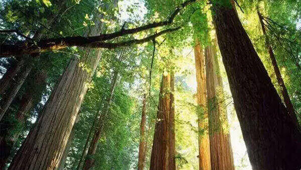

morly旅游圈
林芝，是西藏自治区下辖地级市，古称工布，“林芝”是藏文“尼池”或“娘池”音译而来，藏语意为“娘氏家庭的宝座或太阳的宝座”，寄托了藏族人民对这片土地的无限敬仰和热爱。林芝风景秀丽，很多地带被誉为“西藏江南”，有林芝桃花节，有丰富多彩的南伊沟等。还有被誉为西藏西双版纳的墨脱县和察隅县底部。
林芝，让你感受不一样的秀丽风景，林芝景点众多，有高松挺拔的林芝巨柏林，让你感受到独属巨柏树的风骨；有风格多变的墨脱瀑布，让你感受到不同的瀑布风景；有云雾缭绕、清澈透底的嘎瓦龙天池，让你感受到踏入仙境的美妙感受；有“西藏众山之父”之称的南迦巴瓦峰，让你感受到它的美丽和神秘；有景色殊异、四时不同的巴松错，让你领略它随着四季变化的迷人景色；有桃花簇拥的桃花沟，让你感受到桃花迷人的风姿。林芝还有许多值得一游的景点，我这里就不一一描述了，林芝还有些隐藏的美景，等待着你去发现、感受。无论你来或不来，它都会一直绽放自己最美好的一面，等待着你的到来。
去林芝旅游，当然也少不了当地特有的美食了，林芝当地珞巴族用玉米、鸡爪谷自酿的白酒，气味芳香纯正，入口绵甜爽净，与朋友在远眺林芝的美景，喝着美酒，畅谈自己的想法，这是一种独特的生活感受。珞巴族用来招待贵客的山鼠，吃着味道十分鲜美，是上等的营养补品。林芝地区的风味饮食除沿袭西藏的传统风味，如青稞酒、糌粑、酥油和酥油茶外，还有一些少数民族的特色食品。林芝的美食正在等待着您的到来！快来品尝它们吧！
林芝旅游攻略：
第一天：飞抵林芝，林芝➔波密(桃花沟)；
第二天：波密➔米堆冰川➔然乌湖➔波密
第三天：波密➔鲁朗➔嘎拉桃花村➔林芝
第四天：林芝➔巴松措
第五天：林芝➔南迦巴瓦峰
第六天：结束开心旅程，返程回家！
内容整理至网络，如有侵权，请联系我们！1255394075@qq.com
